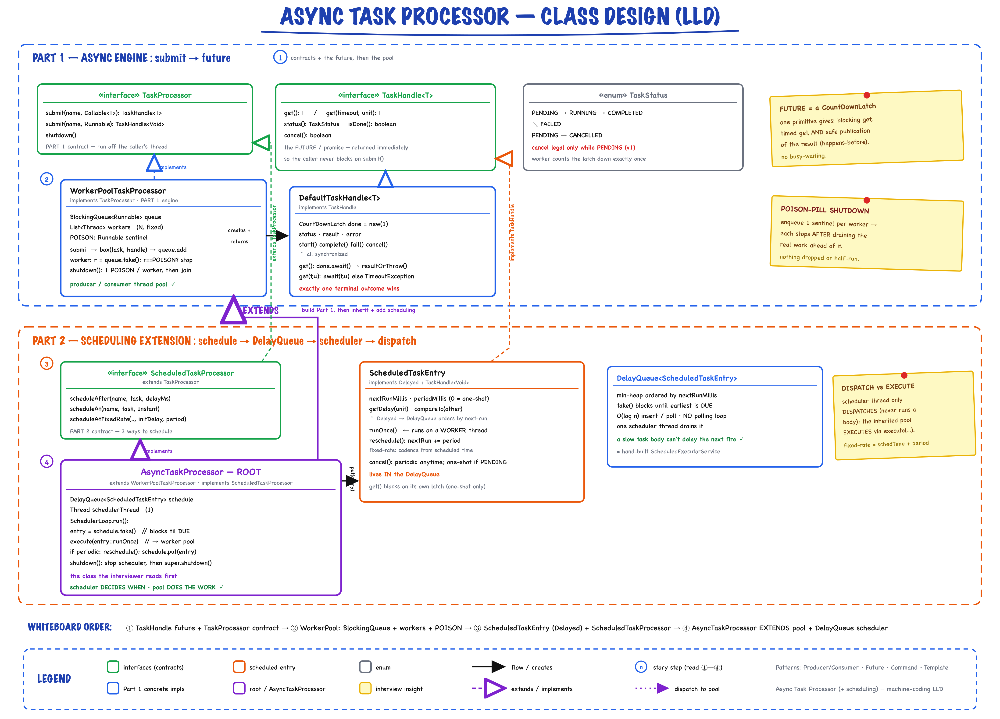
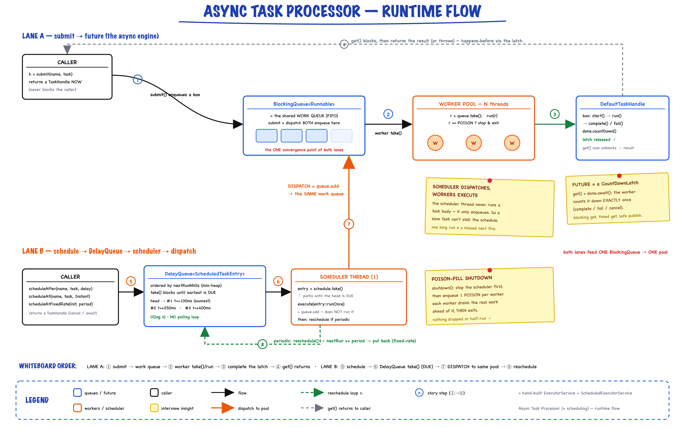

Async Task Processor // build an ExecutorService, then extend it to schedule
A hand-rolled async executor: submit(task) hands back a TaskHandle (future) while a worker pool runs it off the calling thread — then extended to schedule work after a delay, at an instant, and at a fixed repeating rate. Part 1 is ExecutorService; Part 2 is ScheduledExecutorService; both built by hand to show the internals.
01 — Requirements
Read the question as a two-part arc. "Design an async task processor, then extend it to schedule task processing at a particular time and at an interval" is two deliverables in order: (1) an async engine — submit work, run it off the caller's thread on a pool, hand back a result handle (a hand-built ExecutorService); (2) a scheduling extension — run once later, run at an Instant, run repeatedly (a hand-built ScheduledExecutorService). The unlock: build Part 1 with a clean seam so Part 2 is a small extends, not a rewrite.
Functional
- Part 1 —
submit(name, Callable<T>)/submit(name, Runnable)return aTaskHandleimmediately; run concurrently on a fixed worker pool; reportstatus();cancel()a still-queued task; gracefulshutdown() - Part 2 —
scheduleAfter(name, task, delayMillis),scheduleAt(name, task, Instant),scheduleAtFixedRate(name, task, initialDelay, period)(cancellable via the handle) - Await a result —
get()blocks,get(timeout, unit)times out; failure surfaces asTaskExecutionException, cancel asCancellationException
Non-Functional (this problem is about these)
- Correct concurrency — no lost results, no double-run, exactly one terminal outcome per task
- No busy-polling for scheduling — the earliest-due task must surface via a blocking primitive
- One slow task must not stall the scheduler — deciding when is separate from doing the work
- Clean shutdown — no dropped or half-run tasks
Clarifying questions to ask first
- Tasks return values, or fire-and-forget? (both →
Callable<T>andRunnable) - Fixed pool or elastic? (fixed pool of N workers)
- Can we interrupt a running task on cancel? (no — cancel only while queued in v1)
- Fixed-rate or fixed-delay for periodic? (fixed-rate; mention the other)
- Must schedules survive a restart? (no — in-memory; note the durable-store extension)
02 — Core Entities
| Class | Layer | What it does internally |
|---|---|---|
| TaskStatus | model | enum: PENDING → RUNNING → COMPLETED | FAILED, or PENDING → CANCELLED |
| TaskExecutionException | model | wraps what the task threw; surfaced from get() |
| TaskHandle<T> | service | the future/promise: get(), get(timeout,unit), status(), cancel(), isDone() |
| TaskProcessor | service | Part 1 contract: submit(...) + shutdown() |
| ScheduledTaskProcessor | service | Part 2 contract (extends TaskProcessor): scheduleAfter / scheduleAt / scheduleAtFixedRate |
| DefaultTaskHandle<T> | impl | future backed by a CountDownLatch; synchronized state transitions |
| WorkerPoolTaskProcessor | impl | Part 1 engine: LinkedBlockingQueue + N worker threads; POISON-pill shutdown |
| ScheduledTaskEntry | impl | Delayed and TaskHandle; lives in the DelayQueue; runOnce() + reschedule() |
| AsyncTaskProcessor | root | Facade: extends WorkerPoolTaskProcessor, adds a DelayQueue + one scheduler thread |
03 — Design Patterns (with rejected alternatives)
Producer / Consumer — the pool
submit = produce onto a BlockingQueue; N workers consume. The textbook way to decouple submission rate from execution rate. Rejected: thread-per-task — unbounded threads, no backpressure, context-switch thrash.
Future / Promise — the handle
TaskHandle lets submit return instantly. Backed by a CountDownLatch — the minimal primitive giving blocking + timed get() and safe result publication. Rejected: returning the value directly (that's synchronous) or a callback-only API (harder to compose/await).
Command — the task box
A task is a self-contained Callable/Runnable "box" the pool executes uniformly. box(task, handle) wraps a callable + its handle into a self-completing Runnable — the pool never needs to know what's inside.
Template / Extension — build then extend
The question literally says "extend". AsyncTaskProcessor extends WorkerPoolTaskProcessor and the scheduler reuses the pool's execute(...). Rejected: one monster class — the inheritance mirrors the Part-1-then-Part-2 arc and keeps the seam clean.
Delayed + DelayQueue — name it out loud
ScheduledTaskEntry implements Delayed; DelayQueue.take() blocks until the earliest task is due — O(log n), no polling. Rejected: a sleep-poll loop (wastes CPU, imprecise) or ScheduledThreadPoolExecutor (that's the thing we're being asked to build).
04 — Class Diagram

Two bands: Part 1 (the async engine — TaskProcessor / WorkerPoolTaskProcessor, TaskHandle / DefaultTaskHandle with its CountDownLatch future) and Part 2 (the scheduling extension — ScheduledTaskProcessor, ScheduledTaskEntry which is both Delayed and TaskHandle, and AsyncTaskProcessor which extends the pool and adds a DelayQueue + scheduler thread). The big EXTENDS arrow crossing the band boundary is the whole point.
Read it in the room: Part 1 stands alone as a working executor. Part 2 doesn't rewrite it — AsyncTaskProcessor inherits the entire pool and only adds a scheduler thread that feeds the same inherited work queue. That inheritance edge is why the interviewer sees "build, then extend" rather than "one god class."
05 — Part 1: The Async Engine (submit → future)
Two moving parts: a producer/consumer pool (WorkerPoolTaskProcessor) and a latch-backed future (DefaultTaskHandle). submit wraps the task in a self-completing box, drops it on a LinkedBlockingQueue, and returns the handle — the caller never blocks.
submit boxes the work, workers drain the queue
public <T> TaskHandle<T> submit(String name, Callable<T> task) { ensureAccepting(); DefaultTaskHandle<T> handle = new DefaultTaskHandle<T>(nextId(name)); queue.add(box(task, handle)); // produce onto the BlockingQueue return handle; // hand back the future NOW } // each worker thread: Runnable r = queue.take(); // block until work arrives if (r == POISON) return; // graceful stop after draining try { r.run(); } catch (Throwable t) { /* box records its own failure */ }
The box is a self-completing Command
static <T> Runnable box(Callable<T> task, DefaultTaskHandle<T> handle) { return () -> { if (!handle.start()) return; // was cancelled before we started try { handle.complete(task.call()); } catch (Throwable t) { handle.fail(t); } }; }
The pool runs Runnables uniformly; the box knows how to complete its handle. That's the Command seam that keeps the pool ignorant of result types.
06 — Part 2: The Scheduling Extension (DelayQueue)
AsyncTaskProcessor extends WorkerPoolTaskProcessor and adds one scheduler thread over a DelayQueue<ScheduledTaskEntry>. The scheduler only decides when; when an entry is due it dispatches to the inherited pool via execute(...) — it never runs a task body itself.
The scheduler loop — decide-when vs do-work
ScheduledTaskEntry entry = schedule.take(); // returns only once DUE — O(log n), blocking if (entry.isCancelled()) continue; execute(entry::runOnce); // DISPATCH to the worker pool, don't run here if (entry.isPeriodic() && !entry.isCancelled()) { entry.reschedule(); // nextRun += period (fixed-rate) schedule.put(entry); // re-insert for the next tick }
ScheduledTaskEntry is both Delayed and TaskHandle
public long getDelay(TimeUnit unit) { return unit.convert(nextRunMillis - System.currentTimeMillis(), MILLISECONDS); } public int compareTo(Delayed o) { // DelayQueue orders by next-run return Long.compare(nextRunMillis, ((ScheduledTaskEntry) o).nextRunMillis); } public void reschedule() { nextRunMillis += periodMillis; } // fixed-RATE
Three schedule modes, one entry type
scheduleAfter—firstRun = now + delay,period = 0(one-shot)scheduleAt— delegates toscheduleAfter(when.toEpochMilli() - now)scheduleAtFixedRate—firstRun = now + initialDelay,period > 0; the loop re-inserts each tick
Fixed-rate vs fixed-delay. Rate =scheduledTime + period(steady cadence, runs can bunch up if they overrun); delay =completionTime + period(steady gap). This impl is fixed-rate; the switch is one line inreschedule().
07 — Concurrency (the whole point of the problem)
The future is a latch
get() awaits a CountDownLatch; the worker counts it down exactly once. start()/complete()/fail()/cancel() are synchronized, so exactly one terminal outcome wins — a cancel racing a start can't both succeed. The latch also gives happens-before, so get() safely sees result.
POISON-pill graceful shutdown
shutdown() stops accepting, then enqueues one POISON sentinel per worker so each worker exits after draining the real work ahead of it, then joins. Chosen over interrupting workers — interrupting mid-task risks half-run/dropped work.
Dispatch vs execute
The scheduler thread only dispatches (enqueues onto the shared queue); the inherited pool executes. A long-running task body can never delay the firing of the next scheduled task — the two concerns run on different threads.
Shared state is the queues — nothing else
LinkedBlockingQueue (work) and DelayQueue (schedule) are both thread-safe, so producers, workers, and the scheduler need no extra locks. Result publication rides each handle's latch. Cancellation is synchronized on the handle. Shutdown order matters: stop the scheduler first (so it stops dispatching), then drain + stop the workers.
// AsyncTaskProcessor.shutdown() — order matters schedulerRunning = false; schedulerThread.interrupt(); schedulerThread.join(); super.shutdown(); // POISON pills + join the workers
08 — Runtime Flow

Two lanes feed one worker pool. Lane A (async): submit() → BlockingQueue → a worker take()s and runs the box → completes the CountDownLatch future, so get() unblocks. Lane B (scheduling): schedule*() → DelayQueue ordered by next-run → the scheduler thread take()s (blocking until DUE) → dispatches onto the same work queue → reschedules if periodic. The BlockingQueue is the single convergence point.
Why the two lanes converge on one queue
"Dispatch to the same pool" is literally execute(entry::runOnce) → queue.add(...) — the scheduler drops due tasks onto the same LinkedBlockingQueue the workers already drain. One pool serves both submitted and scheduled work; the scheduler is just another producer.
09 — Interview Q&A (the 90-min round lives here)
| Follow-up | Answer |
|---|---|
| Task priority? | Swap the work LinkedBlockingQueue for a PriorityBlockingQueue with a Comparator on task priority. Watch low-priority starvation — add an age-boost. |
| Retry with backoff on failure? | Wrap the box in a retry decorator: on exception, scheduleAfter(name, task, backoff(attempt)), cap attempts, then dead-letter. Reuses the scheduler you already built. |
| Cancel a running task? | Track the worker Thread per running task; cancel(true) interrupts it; the body must be interrupt-aware. v1 only cancels queued tasks because interrupting shared/IO work is dangerous. |
| Backpressure / bounded queue? | Bound the queue; on full, apply a rejection policy (block the producer, drop-oldest, or reject) — the same choices as ThreadPoolExecutor. |
| Fixed-rate vs fixed-delay? | Rate = scheduledTime + period (steady beat, can bunch up); delay = completionTime + period (steady gap). I built fixed-rate; the switch is one line in reschedule(). |
| Survive process restart? | Persist scheduled entries (DB / Redis sorted-set by next-run); on boot the scheduler rebuilds the DelayQueue; make runs idempotent so a crash mid-run doesn't double-execute. |
| Distribute across machines? | The DelayQueue becomes a shared store + a leased/claimed ready-queue (Kafka/SQS); workers are separate processes; add heartbeats + at-least-once + idempotency. (Crosses into HLD.) |
| Why hand-build it? | It is ExecutorService + ScheduledExecutorService — say that up front so they know you know the JDK, then build the internals (blocking work queue + delay queue + scheduler) to prove you understand them. |
10 — 90-Minute Pacing
| Time | Do |
|---|---|
| 0–7 | Clarify scope; name the JDK equivalents; agree the Part-1-then-Part-2 plan |
| 7–15 | Sketch: TaskHandle (future) + BlockingQueue + workers; then DelayQueue + scheduler |
| 15–40 | Part 1: DefaultTaskHandle (latch), WorkerPoolTaskProcessor (workers, submit, POISON shutdown) + a running demo (submit / get / fail / cancel) |
| 40–65 | Part 2: ScheduledTaskEntry (Delayed), AsyncTaskProcessor extends pool + the scheduler loop; scheduleAfter / At / AtFixedRate |
| 65–78 | Demo the schedule modes + fixed-rate cancel; a couple of concurrency tests (barrier, drain-on-shutdown) |
| 78–90 | Their injected follow-up (priority / retry / running-cancel / fixed-delay) — talk + a small change |
If time collapses: ship Part 1 fully (submit → future → pool → shutdown) running, then just scheduleAfter for Part 2. Never cut the runnable demo or the graceful-shutdown story — the whole point is that you got the threading right.
11 — Package Structure
asynctaskprocessor/ ├── model/ │ ├── TaskStatus -- PENDING -> RUNNING -> COMPLETED | FAILED | CANCELLED │ └── TaskExecutionException -- wraps what a task threw, surfaced from get() ├── service/ │ ├── TaskHandle<T> -- the future/promise: get(), status(), cancel() │ ├── TaskProcessor -- PART 1 — submit(...) + shutdown() │ └── ScheduledTaskProcessor -- PART 2 — scheduleAfter / scheduleAt / scheduleAtFixedRate ├── service/impl/ │ ├── DefaultTaskHandle -- future backed by a CountDownLatch │ ├── WorkerPoolTaskProcessor -- PART 1 engine: BlockingQueue + N worker threads │ └── ScheduledTaskEntry -- Delayed + TaskHandle; lives in the DelayQueue ├── AsyncTaskProcessor.java -- root: extends the pool, adds a DelayQueue scheduler └── AsyncTaskProcessorDemo.java -- async + all 3 scheduling modes
Run it
mvn -q compile exec:java -Dexec.mainClass="com.you.lld.problems.asynctaskprocessor.AsyncTaskProcessorDemo" mvn -q test -Dtest=AsyncTaskProcessorTest -- 10 tests
12 — Patterns Summary
| Pattern | Where | One-line why |
|---|---|---|
| Producer / Consumer | WorkerPoolTaskProcessor | submit produces onto a BlockingQueue; N workers consume — decoupled rates |
| Future / Promise | TaskHandle / DefaultTaskHandle | hand back a result-handle now; a CountDownLatch backs blocking + timed get() |
| Command | box(task, handle) | a task is a self-completing Runnable the pool runs uniformly |
| Template / Extension | AsyncTaskProcessor extends pool | build the async engine, then inherit + add scheduling |
| Delayed + DelayQueue | ScheduledTaskEntry | take() blocks until the earliest task is due — O(log n), no polling |
| Facade | AsyncTaskProcessor | one entry point: submit / schedule / shutdown |
2 queues · 1 latch-backed future · scheduler DISPATCHES, workers EXECUTE · hand-built ExecutorService + ScheduledExecutorService